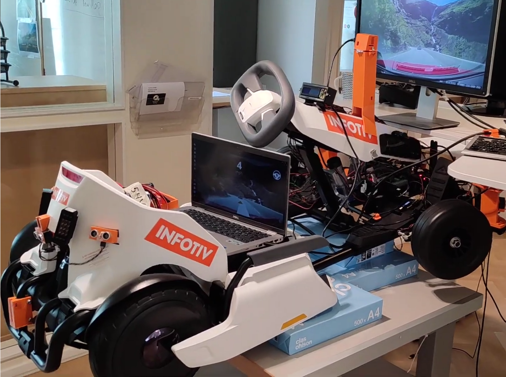
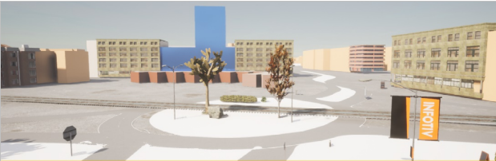

Research Project proposal¶
Introduction:¶
To increase the knowledge and expertise within the evolving automotive industry, Infotiv AB developed the open and educational autonomous platform. The goal of the platform is to have an autonomous GO-Kart that progresses research and development in the automotive industry.
The technical scope of this project will be ever-changing depending on the market needs and as new technology within the automotive industry emerges. The scope includes, but is not limited to, development in electrical hardware (PCB design, battery), embedded systems, mechanical hardware (3D printed), software and protocol design, sensing, perception, and decision making using machine learning, telematics, electromobility, mobile app, and UX design.

Image 1. GoKart autonomous platform
Current GoKart¶
Currently, the system is designed in three modules, an Automotive platform that implements the core driving functionality (steering, throttle, and brake) through the CAN bus. Body electronics include lights, sensors, a horn, and a monitor displaying the platform power mode and a simulated key. Finally, the autonomous drive module runs the perception and sensing for decision-making using AI/ML algorithms capable of Adaptive Cruise Control (ACC), Automated Lane Centering (ALC), and other basic driving assistant functionalities.
Future plan¶
We are now at the point where we want to extend the functionalities and introduce the second generation of the autonomous platform capable of running cutting-edge algorithms. Achieving this requires upgrading the electronic control units (ECU), improving the verification and validation of each unit and a separate diagnostic module, Extending the machine learning-based autonomous drive system with advanced new functionality such as Driver Awareness and Monitoring Systems (DMS), improving environment perception by road sign and traffic light detection system, path planning.
Introducing secure teleoperation, telematic and infotainment system capable of remotely and continuously updating the software for each ECU is a important need for a modern vehicle. Such a system should be capable of giving the realtime control of the vehicle to a remote operator and trasmit sensor data (Camera, LIDAR, ...) to the back office in a secure manner. As a part of the plan we are interested to design a modern and realtime system for our autonomous platform.
In parallel, Infotiv is interested in developing a digital twin of the autonomous platform inside a simulated environment for rapid and agile verification of perception-based units and Advanced Driver Assistance Systems (ADAS for short) components. As an example, decision-making of Brake Assist (BA) and Autonomous Emergency Braking (AEB) can be tested in dangerous situations when the test may raise safety concerns. We are also interested in exploring the possibility of training and testing these ML models as much as possible inside a simulator before exposing them to the real world.

Image 2. Göteborg Åkareplatsen in CARLA
Conclusion and goals¶
As a result of the project, we hope to release and open the software code, hardware design and other resources to both self-driving enthusiasm within academia and industry in order to improve the collaboration between them.
Development of functionalities in smaller scale models is a safer and more accesssible solution for wide variety of situation. A the same time using simulators and digital twins reduces the cost and time of design, implementation, and verification of autonomous system and therefore speeds up the time to market benefiting Infotiv, and its customers with Sweden and beyond.